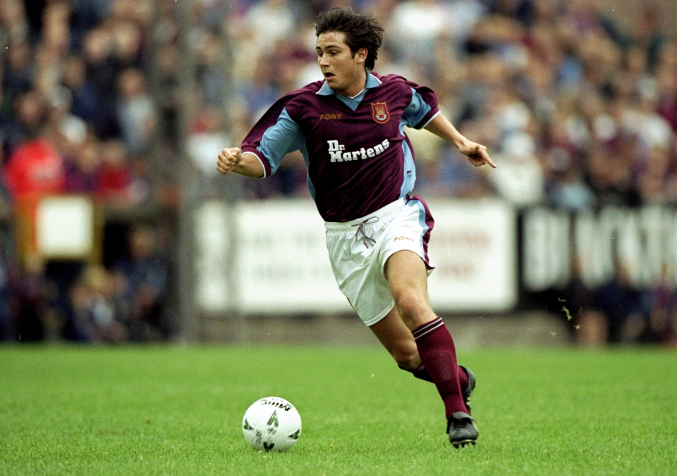
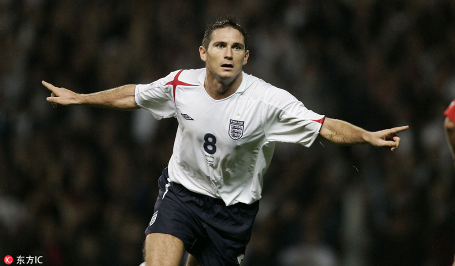

Frank Lampard - Heart of Chelsea

Frank Lampard is the son of footballer Frank Richard Lampard and it was obvious for him to join football. He started his professional career at the age of 14 by joining the West Ham United. He was a youth player for the club in the 1994-95 season. His football skills were so well that he used to take most of the penalty kicks in the game. Lampard made his U21 debut for England on November 13, 1997 and continued to play in 19 of their matches with 9 goals to his name.
His senior debut came in the year 1999 against Belgium where the team won by a 2-1 score. Lampard made his first FIFA goal against Croatia in 2003. Lampard played a vital role in England's journey through the 2004 Euro Cup, which was his first international tournament. He scored three goals against France, Croatia and Portugal. This performance made him a regular player in the national team and he went on to play in the 2006 FIFA World Cup. He scored 5 goals in the tournament before England was eliminated in the Quarterfinals. Lampard also helped England to qualify for the 2010 FIFA World Cup by hitting two goals in the qualification match against Croatia. But here too, Lampard couldn't prevent the elimination of England at the hands of Germany in Quarterfinals.
Lampard was the member of West Ham United until 2001 where he played 148 matches and scored 24 goals. But after switching over to Chelsea, he remained there until 2014 with making 429 appearances and scoring 147 goals. This made him the highest scorer for Chelsea. His associations with Manchester United and New York City FC in his later days didn't go too well for a player like him. Lampard Lampard was one of the greatest midfielders of his time and has a number of records to his name.
His major set of awards came during his association with Chelsea, such as the FA Cup (4 times), UEFA Champions League in 2011-12 and the Europa League in 2012-13. He is also a 3 time Chelsea Player of the Year, the 2008 UEFA Midfielder of the Year and winner of 2005 FIFA Player of the Year Silver Cup. In addition to these, he has various other awards as well including an Officer Award from the British Empire.
Lampard announced his retirement from international football in 2014 and a complete retirement in 2016. Post retirement, he appears as a football expert on sports shows. He is now a children's writer who writes about the adventures of a fictional footballer, Lampardie with his magic football. He had also published his autobiography, Totally Lampard back in 2006.
Lampards biggest win with Chelsea is for sure the Uefa Champions League in 2012. This was a very hard way to trophy for the Blues. Final rival for Chelsea was one of the strongest teams in the world - Bayer Munich. Despite their strength Bayern players were so motivated as the final took place at their home stadium - Allianz Arena. To be honest, Chelsea was huge underdog in that game.
The game was going as expected: German team took control over the game and had a huge amount of goalscoring moments. And when Thomas Muller hitted the ball into the net on 83th minute no one believed that Chelsea could pretend for something in this game. Suddenly Chelsea received an opportunity: corner, first their cornet of the game. In the meantime, Bayern served 17. And on 88th minute Didier Drogba, another Chelsea legend, scored an equaliser. So the game went to exta-time.
Despite the scored goal, the initiative was still on the side of Bayern. During has another opportunity to win the game - Didier Drogba fouled in the box and Bayern received penalty. That was high pressure moment for both the penalty taker and the keeper. But Peter Cech handled his nerves and won this duel. Extra time ended with the score of 1:1. So the winner was going to be decided in the penalty shootout.
Shootout started terrible for Chelsea: Juan Mata missed his shot, while Bayern players didn't miss a one. But after that last two shots by Olic and Schweinsteiger shots were saved by Peter Cech. Frank Lampard scored his penalty confidently and Didier Drogba finished the shootout winning the trophy for Chelsea.